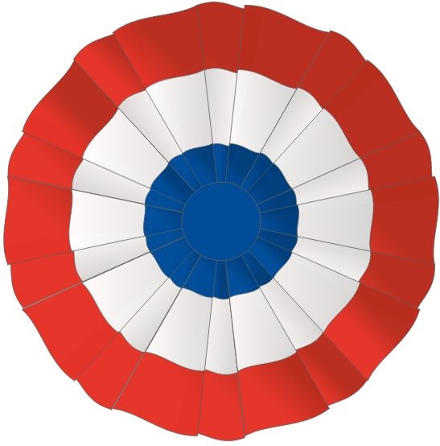
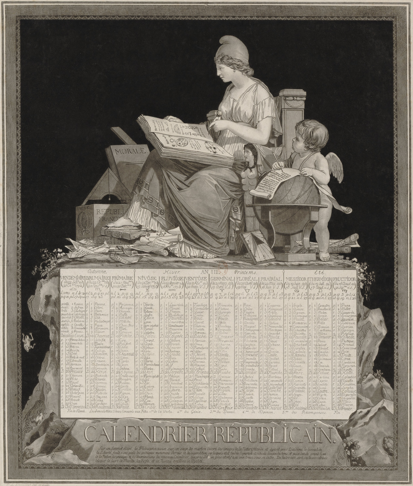

An Ending in Summer
Three objects, one morning
Exhibition / 14 September - 9 October 2026

CC.17
Cockade, tricolour silk
Made of Silk, with the colours of the French Flag. This was pinned during the Bastille and was never quite taken off.

CC.9
Calendar, printed on paper, Paris
The First French Republic remade the year. It had 12 months, of thirty days. The months were named after the weather and seasons. For example, it had Vendémiaire, Brumaire, Thermidor, Frimaire, Fructidor. The calendar lasted for 12 years.

CC.4
Guillotine blade, iron, weighted
The Guillotine was suggested by a doctor as a mercy, but it was adopted for terror. This stood in the Palace of the Revolution and was last used on the tenth day of the month of heat. Its blade was retired unsharpened.